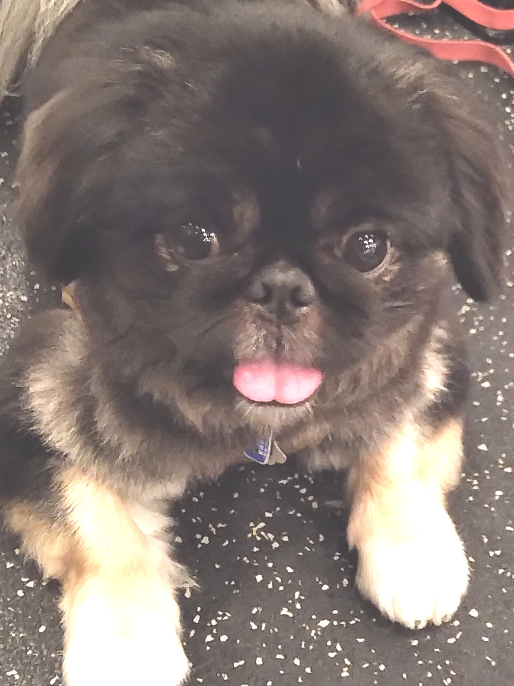

学び続ける姿勢
目の前の仕事に必要な知識を短期間で吸収し、実務に接続していくことにやりがいを感じます。近年はアート分野ではコンテンポラリーアート、AI分野では生成AI・API・AI評価の学習を継続しており、海外のオンラインコースや国内外の情報発信を通じて知識をアップデートしています。専門外の領域に対しても臆せず学び続けられることは、自分の大きな強みだと考えています。
Personal
必要なことを地道に調べ、相手に伝わる形に整理し、最後までやり切ることを大切にしています。仕事においてもプライベートにおいても、継続性・責任感・細部への配慮を大事にしてきました。
目の前の仕事に必要な知識を短期間で吸収し、実務に接続していくことにやりがいを感じます。近年はアート分野ではコンテンポラリーアート、AI分野では生成AI・API・AI評価の学習を継続しており、海外のオンラインコースや国内外の情報発信を通じて知識をアップデートしています。専門外の領域に対しても臆せず学び続けられることは、自分の大きな強みだと考えています。
これまでのキャリアの中では、負荷の高い環境や不確実性の高い状況も経験してきましたが、途中で投げ出さず、優先順位を見極め、必要な情報を集め、現実的な改善策を考えながら職責を果たすことを大切にしてきました。変化の速い環境でも腰を据えて取り組める点は、自分の強みの一つです。
業務を個人の属人的なノウハウに閉じ込めるのではなく、周囲が理解しやすい形で言語化・文書化し、再利用できる状態にすることを重視しています。スタッフ教育や現場運営に携わってきた経験から、相手の理解度や状況に応じて伝え方を調整すること、そして継続的に機能する仕組みとして残すことの重要性を実感しています。
アート市場は、文化的価値・審美性・作家性といった定量化しにくい要素と、価格形成・流通・資産性という経済的側面が共存する複雑な領域だと感じています。私はその複雑さにこそ可能性を感じており、アートを単純に数値化するのではなく、情報アクセスの改善、比較可能性の向上、業務設計の最適化といった形でAIやデータを活用したいと考えています。
“閉じた情報も、調べ、構造化し、意思決定に使える形にして初めて価値になる”
展覧会、ギャラリー、アートコレクション、海外記事、AIニュース、オンライン講座など、文化と技術の双方に継続的に触れることを楽しんでいます。新しい知識をインプットするだけでなく、比較・要約・メモ化し、自分なりの理解として蓄積していく習慣があります。
Pets & Well-being
プライベートでは、ペキニーズという犬種のペットと暮らしています。日々の世話や観察を通じて、小さな変化に気づくこと、生命に向き合うことの責任を実感しています。また、ウェイトトレーニングを継続することで、体力・集中力・コンディション管理を意識しており、安定してパフォーマンスを発揮できる状態づくりを心がけています。

犬と暮らす中で、日々のコンディションの変化を観察し、丁寧に向き合う姿勢が自然と身につきました。こうした習慣は、仕事においても相手の状況や小さな違和感を見逃さず、細部に配慮する姿勢につながっていると考えています。
ウェイトトレーニングを継続し、健康状態を良好に保つよう努めています。継続的な運動習慣により、体力面だけでなく、集中力やストレス耐性の維持にもつながっていると感じています。変化の速い環境や一定の負荷がかかる業務においても、安定したパフォーマンスを出せる基盤として、日々のコンディショニングを重視しています。